- 00 开篇词 人工智能：新时代的必修课.md.html
- 01 数学基础 九层之台，起于累土：线性代数.md.html
- 02 数学基础 月有阴晴圆缺，此事古难全：概率论.md.html
- 03 数学基础 窥一斑而知全豹：数理统计.md.html
- 04 数学基础 不畏浮云遮望眼：最优化方法.md.html
- 05 数学基础 万物皆数，信息亦然：信息论.md.html
- 06 数学基础 明日黄花迹难寻：形式逻辑.md.html
- 07 机器学习 数山有路，学海无涯：机器学习概论.md.html
- 08 机器学习 简约而不简单：线性回归.md.html
- 09 机器学习 大道至简：朴素贝叶斯方法.md.html
- 10 机器学习 衍化至繁：逻辑回归.md.html
- 11 机器学习 步步为营，有章可循：决策树.md.html
- 12 机器学习 穷则变，变则通：支持向量机.md.html
- 13 机器学习 三个臭皮匠，赛过诸葛亮：集成学习.md.html
- 14 机器学习 物以类聚，人以群分：聚类分析.md.html
- 15 机器学习 好钢用在刀刃上：降维学习.md.html
- 16 人工神经网络 道法自然，久藏玄冥：神经网络的生理学背景.md.html
- 17 人工神经网络 一个青年才俊的意外死亡：神经元与感知器.md.html
- 18 人工神经网络 左手信号，右手误差：多层感知器.md.html
- 19 人工神经网络 各人自扫门前雪：径向基函数神经网络.md.html
- 20 人工神经网络 看不见的手：自组织特征映射.md.html
- 21 人工神经网络 水无至清，人莫至察：模糊神经网络.md.html
- 22 深度学习 空山鸣响，静水流深：深度学习概述.md.html
- 23 深度学习 前方有路，未来可期：深度前馈网络.md.html
- 24 深度学习 小树不修不直溜：深度学习中的正则化.md.html
- 25 深度学习 玉不琢不成器：深度学习中的优化.md.html
- 26 深度学习 空竹里的秘密：自编码器.md.html
- 27 深度学习 困知勉行者勇：深度强化学习.md.html
- 28 深度学习框架下的神经网络 枯木逢春：深度信念网络.md.html
- 29 深度学习框架下的神经网络 见微知著：卷积神经网络.md.html
- 30 深度学习框架下的神经网络 昨日重现：循环神经网络.md.html
- 31 深度学习框架下的神经网络 左右互搏：生成式对抗网络.md.html
- 32 深度学习框架下的神经网络 三重门：长短期记忆网络.md.html
- 33 深度学习之外的人工智能 一图胜千言：概率图模型.md.html
- 34 深度学习之外的人工智能 乌合之众的逆袭：集群智能.md.html
- 35 深度学习之外的人工智能 授人以鱼不如授人以渔：迁移学习.md.html
- 36 深度学习之外的人工智能 滴水藏海：知识图谱.md.html
- 37 应用场景 你是我的眼：计算机视觉.md.html
- 38 应用场景 嘿, Siri：语音处理.md.html
- 39 应用场景 心有灵犀一点通：对话系统.md.html
- 40 应用场景 数字巴别塔：机器翻译.md.html
- 一键到达 人工神经网络复习课.md.html
- 一键到达 应用场景复习课.md.html
- 一键到达 数学基础复习课.md.html
- 一键到达 机器学习复习课.md.html
- 一键到达 深度学习之外的人工智能复习课.md.html
- 一键到达 深度学习复习课.md.html
- 一键到达 深度学习框架下的神经网络复习课.md.html
- 推荐阅读 我与人工智能的故事.md.html
- 新书 《裂变：秒懂人工智能的基础课》.md.html
- 直播回顾 机器学习必备的数学基础.md.html
- 第2季回归 这次我们来聊聊机器学习.md.html
- 结课 溯洄从之，道阻且长.md.html
- 课外谈 “人工智能基础课”之二三闲话.md.html
- （课外辅导）人工神经网络 拓展阅读参考书.md.html
- （课外辅导）数学基础 拓展阅读参考书.md.html
- （课外辅导）机器学习 拓展阅读参考书.md.html
- （课外辅导）深度学习 拓展阅读参考书.md.html
- 捐赠
直播回顾 机器学习必备的数学基础
自从12月份开始更新到现在，我们这个专栏已经不知不觉走过了4个月的时间。在这4个月的时间当中，我和大家一块分享了最近火热的人工智能的技术，包括它的一些数学基础、机器学习的算法以及神经网络，还有深度学习这样一些热点的话题。
俗话说得好，编筐编篓，全在收口。能在最后一次更新的时候和大家做一次这样的视频直播的分享，我觉得也是非常荣幸，能够有机会和大家进行一个更加深入的交流。
我们今天分享的内容主要是关于机器学习中的基础数学。
从这个主题当中，我也可以感受到，大家在学习人工智能的时候，一个务实的态度。一方面，在接触人工智能的时候，一些前沿的算法或者是一些前沿的模型，我们是要接触的，但是归根到底，还是要回归到基础数学当中来。
如果不把基础打好，你是没有办法真正理解这些复杂的模型的，所以说不管算法它有多么复杂，最终都是简单数学的一个若干的组合。只不过在这个组合的过程当中，它的难度会越来越大，它实现的功能也会越来越强。
关于人工智能或者说机器学习当中的这些基本数学，我们今天分享的内容，包括这样四个部分：
第一，我们关注的是这个机器学习当中它会用到哪些基础数学；
第二，这些数学在机器学习，或者说在人工智能这个大环境下都能起到一些什么样的作用；
第三，有了这个学科，有了数学，分析了它的作用之后，我们需要把它掌握到一个什么样的程度；
最后，简单介绍一下，如何在短时间内，高效率地掌握。
机器学习会用到哪些数学基础
第一部分，我们先来看一看机器学习需要哪些数学的基础。我们可以先引用一个专家的定义。这个专家是来自美国华盛顿大学的佩德罗·多明戈斯（Pedro Domingos），这也是人工智能领域的一个老兵。他对于机器学习给出了这样一个定义，机器学习是由三个部分组成，分别是表示、评价，还有优化。这样的三个步骤，实际上也就对应着在机器学习当中所需要的数学。
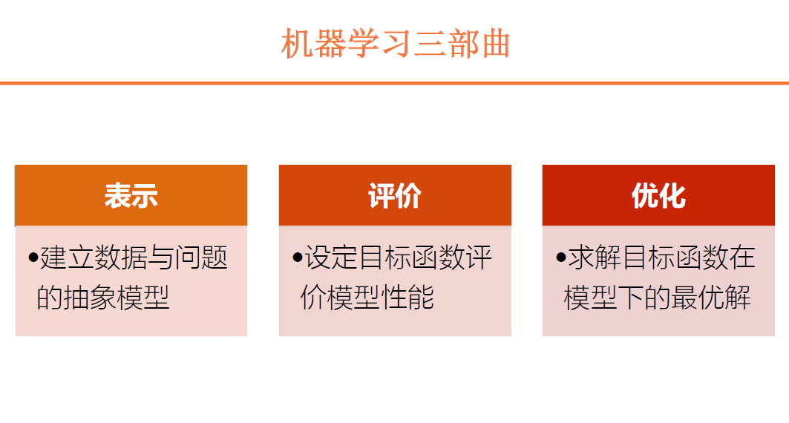
机器学习三部曲之表示
在表示这一步当中，我们需要建立起数据，还有实际问题的抽象模型。所以，这里面就包括了两个方面。一方面我们要对要解决的实际问题进行抽象化处理。比方说我们要设计一个算法，判断一个邮件它到底是不是一封垃圾邮件，那么得到的结果无外乎两种，要么是，要么不是。
这样一个问题如果对它做抽象，实际上就是个二分类。是呢，我们可以把它定义成0，不是呢，可以把它定义成1。所以，你这个问题最终要解决的是什么呢？输出一个0或者1的结果。当然你把0和1的意义调过来也可以，用1代表是垃圾邮件，0代表不是，也是可以的。
所以，在表示的过程当中，我们要解决的问题就是把我们面临的真实世界当中的一些物理问题给它抽象化，抽象成一个数学问题。抽象出来这个数学问题之后，我们要进一步去解决它，还要对这个数据进行表示。
对于问题抽象完了以后，我们还要对数据进行抽象。在判定这个邮件到底是不是垃圾邮件的时候，我们要怎么判断呢？要根据它的特征进行判断，看一看这个邮件里的关健字是否有关于推销的，或者关于产品的。这些关键字，我们就要把它表示成一个特征，表示成一个向量，或者表示成其他的形式。表示成向量也好，表示成其他形式也好，都是对这个数据做出了抽象。
在表示阶段，我们需要建立的是数据，还有问题的抽象模型。把这个模型建立出来，然后去寻找合理的算法。
- K-近邻算法
在机器学习当中，我们常见的有K-近邻算法。K-近邻算法在我们的专栏中没有提到，因为它太简单了。它实际上就是，找到一个样本点和这个样本点最近的几个邻居，最近的这K个邻居。按照少数服从多数的原则，对它进行分类，这就是K-近邻算法。
- 回归模型
除此之外，还有线性回归这样的统计学习方法。我们建立一个线性回归模型，当然，对二分类我们可以建立逻辑回归模型。
- 决策树
还有像决策树这样的方法。决策树它不依赖于数据，完全是自顶向下的一个设计。线性回归也好，逻辑回归也好，它是从数据反过来去推导模型，而决策树直接去用模型判定数据，两个方向不太一样。
- SVM支持向量机
最后，还有SVM支持向量机这样的纯数学方法。所以说表示的部分，我们需要把问题和数据进行抽象，这个时候我们就要用到抽象的工具。
机器学习三部曲之评价
给定了模型之后，我们如何评价这个模型的好坏呢？这个时候就需要设定一个目标函数，来评价这个模型的性质。
- 设定目标函数
目标函数的选取也可以有多种形式。像对于我们说到的垃圾邮件这种问题，我们可以定义一个错误率。比方说一个邮件它原本不是垃圾邮件，但是我这个算法误判成了垃圾邮件，这就是一个错例。所以呢，错误率在分类问题当中是个常用的指标，或者说常用的目标函数。
- 最小均方误差和最大后验概率
那么在回归当中呢，我们会使用最小均方误差这样一个常用目标函数，尤其是在线性回归里。除此之外呢，还有最大后验概率，一些其他的指标。
机器学习三部曲之优化
有了目标函数以后，我们要求解这个目标函数在模型之下的一个最优解，这个模型能够获取到的最小错误率，或者最小均方误差是多少呢？我们要求出一个特定的值。没有这个值的话，你如何评价不同的模型它到底是好是坏呢？所以说优化这个步骤的作用是求解目标函数在模型之下的一个最优解，看看这个模型在解决这个问题的时候，最好能达到什么样的程度。
所以说，多明戈斯教授总结到的机器学习的三个步骤，包括了表示、评价、优化这样三个步骤，在这三个步骤当中我们会用到不同的数学公式来分别解决这三个问题。
今天的机器学习解决什么问题
我们今天所说的这个机器学习应该和它原始的含义是有些区别的。我们都知道，人工智能是上个世纪50年代到60年代这个区间上建立起来的。最早的时候，机器学习不是像今天这样子，它执行的是什么任务呢？执行的是纯粹的逻辑推理，用来干吗呢？用来证明这个数学定理。
所以说在早期的机器学习当中，在这个算法当中，我们看到的可能都是一些逻辑上的符号，看不到一个数字，可能也看不到一个加减乘除。整篇的证明你连个数字都找不着。
但是今天呢，随着数据体量的庞大，我们获得数据越来越容易，所以机器学习的任务也相应的发生一些改变。我们关注的点不再是纯逻辑的一个处理。因为纯逻辑处理的应用范围有限，毕竟我们真实世界当中没有那么多理想的情况去给你处理。
所以今天的机器学习，更多的解决的问题是什么呢？是在给定一些数据的情况之下来做出一定的判断，或者做出一定的推断。
比方说，我根据这个星期或者这个月的这个股价，来判断一下明天我买的这个股票到底是涨还是跌，或者说我根据前一个月或者前两个月、前三个月这个彩票的出奖号码来确定下一期摇奖出的是什么号。当然这些问题其实并没有什么特别明显的规律在里面，我们可能更关注的是，能够解决的问题是有内在的规律的，不是完全的随机分布，不会完全是一个随机事件，而是要通过数据挖掘出数据内部的规律，再通过这些规律来指导我们下一步的判断，或者说指导下一步的决策。这是我们机器学习的一个主要任务。这个任务分解开来就包括了表示、评价，还有优化这样三个步骤。
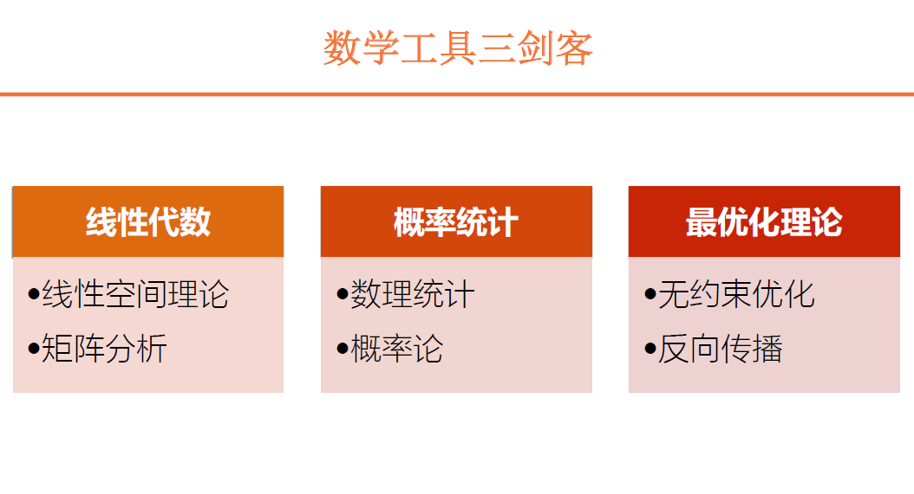
三种数学工具之线性代数
在这三个步骤中，应用了三种不同的工具。在表示这个步骤当中，我们主要使用的工具是什么呢？就是线性代数。线性代数呢，我们在这个专栏里面也提到，它起到的一个最主要的作用就是把具体的事物转化成抽象的数学模型。不管你的世界当中有多么纷繁复杂，我们都可以把它转化成一个向量，或者一个矩阵的形式。这就是线性代数最主要的作用。
所以，在线性代数解决表示这个问题的过程中，我们主要包括这样两个部分：一方面是线性空间理论，也就是我们说的向量、矩阵、变换这样一些问题；第二个是矩阵分析。给定一个矩阵，我们可以对它做所谓的SVD分解，做奇异值分解，或者是做其他的一些分析。
这样两个部分共同构成了我们机器学习当中所需要的线性代数，当然了，这两者也是各有侧重。线性空间的话，我们主要应用在一些解决理论问题当中，矩阵分析在理论当中有使用，在实践当中也有一些使用。
三种数学工具之概率统计
我们说到，线性代数起作用是在表示的过程当中。在评价过程中，我们需要使用到概率统计。概率统计包括了两个方面，一方面是数理统计，另外一方面是概率论。
数理统计好理解，我们机器学习当中应用的很多模型都是来源于数理统计。比方说最简单的线性回归，还有逻辑回归，它实际上都是来源于统计学。在具体地给定了目标函数之后，我们在实际地去评价这个目标函数的时候，我们会用到一些概率论。比方说给定了一个分布，我要求解这个目标函数的期望值。在平均意义上，这个目标函数能达到什么程度呢？这个时候就需要使用到概率论。所以说在评价这个过程中，我们会主要应用到概率统计的一些知识。
实际上对于数理统计来说，我们在评价模型的时候，不只关注的是一个目标函数，我们可能还关注一些它的统计特性。比如说它的置信度，或者是其他的一些指标。你这个模型建立起来，它的可信性程度到底有多大，这些在早期的机器学习算法当中也是需要考虑的。当然随着神经网络，随着深度学习的兴起，这部分内容实际上渐渐地衰落，或者渐渐地被忽略。你在神经网络当中可能只需要达到一个这个好的目标函数，好的指标就行，至于说它的置信度，这些我们不去考虑。
所以说，这也是深度学习不太受学数学，或者说学统计学的人待见的一个原因。因为统计学强调什么呢？强调可解释性，你这个模型能够达到什么样的指标，我们能把它清清楚楚地讲明白，为什么能够达到这样的指标，它的原理在哪？它背后的根据在哪？
我给定一个分布，假如说高斯分布，那么再给定一个模型，我就可以通过严谨而简洁的这个数学推导，把这个结果以公式的形式给它呈现出来，这个看起来就很高大上，或者说很清楚。
但神经网络和深度学习，现在还达不到这样可解释的程度。所以说现在也有人批评，说深度学习是炼金术，主要的原因在这里。我只能够通过调参数调出一个比较好的结果，但是到底这个结果为什么会出现？哪些因素会影响到它？可能还不是那么清晰。所以呢，关于概率统计，我们主要应用在评价这个过程中。
三种数学工具之最优化理论
关于优化，就不用说了，我们肯定用到的是最优化理论。在最优化理论当中，主要的研究方向是凸优化。
凸优化当然它有些限制，但它的好处是什么呢？能够简化这个问题的解。因为在优化当中我们都知道，我们要求的是一个最大值，或者是最小值，但实际当中我们可能会遇到一些局部的极大值，局部的极小值，还有鞍点这样的点。凸优化可以避免这个问题。在凸优化当中，极大值就是最大值，极小值也就是最小值。
但在实际当中，尤其是引入了神经网络还有深度学习之后，凸优化的应用范围越来越窄，很多情况下它不再适用，所以这里面我们主要用到的是无约束优化。我在整个范围之内，我对参数，对输入并没有限定。在整个的输入范围内去求解，不设置额外的约束条件。
同时，在神经网络当中应用最广的一个算法，一个优化方法，就是反向传播。应用反向传播，我们可以实现深度网络每一层的这个预训练，完成预训练之后，我们再对整体进行微调，能够达到最优的效果。所以说在优化这一块，我们应用到的最主要的就是最优化理论。
三种数学工具和三个步骤并非一一对应
我们今天谈论这个机器学习当中，用到的基础数学都包括哪些呢？包括这三种，线性代数，概率统计，还有最优化理论。这是我们在机器学习当中用到的最基础的一些数学工具。如果大概做一个分类，分别对应到我们机器学习当中，表示、评价，还有优化这样三个步骤。
当然，这种应用它也并不是说一一对应的关系。在表示当中我只用到线性代数，概率统计一点儿都不涉及，同样地，我在评价的时候，线性代数也不涉及，不是这样，都会有一个交叉的过程，但是在每个步骤当中应用到的主要工具还是有所区别。
高等数学是数学工具的基础
当然，在数学工具当中，我们并没有涉及到高等数学，高等数学我们就把它当作一个基础，一个基础中的基础。不光是人工智能，或者说机器学习，只要有数学参与的地方，我们都需要有高等数学这个基础。那么具体到机器学习当中，我们在高等数学这一块儿用到的比较多的，可能包括求导，微分，这样的一些内容。当然还有这个积分，我们在求解这个目标函数的期望值的时候可能也会遇到。
所以到这呢，我们就说，我们介绍了机器学习当中用到了哪些数学。主要就是这三块，线性代数，概率统计，还有最优化，那么任何复杂的算法实际上都是由这三者的结合叠加所构造出来的，那么这三者在机器学习当中他们起到的作用分别是什么呢？我们可以具体地来看一看。
三种数学工具在机器学习中的作用
线性代数在机器学习中的作用
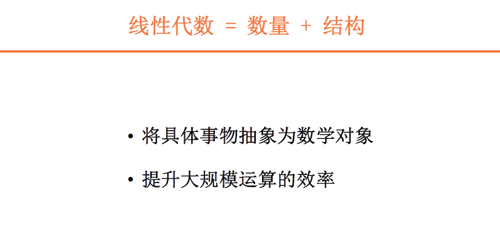
1.将具体事物抽象为数学对象
对于线性代数来说，我们可以对它做一个简单的定义。所谓线性代数是什么？就是数量和结构的一个组合，也就是说，线性代数等于数量加上结构。本身数量呢，它是一个单独的数。对于单个的数我们没有结构可言，对于单个的对象没有结构可言。但是当我们把一组数，或者一堆数排列到一块儿的时候，这个排列不是随机的排列，而是有一定的顺序进行排列的时候，这个时候，数目之间的顺序或者数量之间的顺序就形成了一种结构，这个结构就可以蕴含一定的信息，能够供我们去使用。
除了顺序之外，结构还有另外一层含义。我可以对数量定义一些运算。在线性空间里面我们提到，基本的运算包括什么呢？包括加法，包括数乘，这样一些运算。有了运算之后，我们就可以对不同的对象，单个的数目放在一块儿，按照一定的顺序排列在一起，我们可以把它组成一个向量，组成这样一个对象。那么有了加法，数乘这样一些运算之后，你就可以对这个对象再来进行一些操作。这样的话，就实现了把具体事物给它抽象成数学对象，这样的一个过程。这就是线性代数最主要的一个作用。当然不光是在机器学习里面，在其他应用到线性代数的场合也是一样：把具体的事物抽象成为数学对象。
2.提升大规模运算的效率
当然除此之外呢，它还有另外一个优势，线性代数还有另外一个作用，就是能够提升大规模运算的效率。因为在现代的机器学习当中，我们要处理的数据都是海量的数据，数据的数量是呈指数形式的增长。我们要处理的数据越来越多，如果只是简单地说，用最传统的方法，用一个一个的for循环去处理高维的矩阵，它的效率肯定是相当低下。有了线性代数之后，我们可以把矩阵的运算引入到机器学习的算法当中，通过一些额外的库，或者一些额外的软件包，提升大规模运算的效率。这里面最直观的一个例子就是MATLAB软件。MATLAB软件本身名字叫矩阵实验室。它的特点，或者说它的卖点就在于，对矩阵，或者说对向量它操作的高效率。如果你在MATLAB软件当中编程的话，你用矩阵操作和用这个for循环实现，两者做一个对比，你会明显地感受到它的差异。
总结一下，线性代数，它就等于数量和结构的组合。它的作用，一方面可以把具体的事物抽象成数学对象，另外一方面，可以提升大规模运算的效率。
举例：人脸检测中的特征脸方法
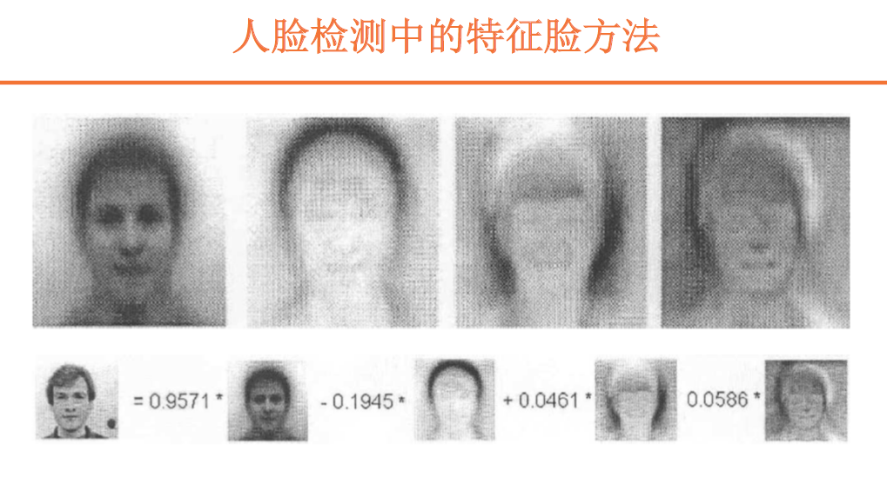
这里面我也举一个例子，是人脸检测当中一个所谓的特征脸方法。特征脸的方法在人脸检测当中算是比较老的方法，在八九十年代就已经提出并且使用。而且相对于深度学习，或者基于神经网络的人脸检测的方法来说，它的效率，或者说准确率可能会稍微低一些，但是它比较能够说明线性代数的作用。
这个特征脸的方法，本质是什么样的呢？当我们对人脸做一个判断的时候，我们可以把这个人脸做一个分解。根据人的面貌特征，可以把它的眼睛的特征拿出来，把鼻子的特征拿出来，把嘴的特征拿出来。这样的话，一张人脸就可以分布到眼睛、鼻子、嘴这样不同的器官维度之上。特征脸的方法采用的也是这样一个思路，只不过呢，它并不是按照眼睛、鼻子、嘴这种方法来处理，而是把一个人脸拆成了几个正交的、不同的图像，这里面每个图像实际上代表的都是一个正交基。
我们这里给出一个例子。一个人脸，我们可以把它拆成三份，或者把它投影到一个三维空间之上。那么，这三个维度分别代表什么呢？每一个维度其实也是一个方方正正的图像，但这个图像你说它看起来是什么呢？有一个人脸的轮廓，但它并不是真正的人脸，而是对原始的一部分数据（当然不只是一张这个人脸的图像），可能对很多张图像做了一个主成分分析。做这个分析之后，我们得到的几个结果。
这三张看似人脸，实际上并不是人脸的正交基，就构成了我们对人脸进行分解的一个基始。一张图片进来之后，这里面有个人脸，我们就可以把它投影到这三个基始之上，得到相应的系数。这样的话，就构成了我们说的特征脸的方法。
所以说，特征脸的方法，它能够非常清晰地体现出来我们线性代数的思维，也就是把具体的事物抽象到一个线性空间之上，来进行求解。当然这个线性空间可能是我们平时所接触到的物理空间、二维空间，一横一竖两条线，三维空间再加上一个高度，也可能是更加抽象的空间。在抽象的空间之上，我们得到的就是这个看似人脸，实际上它有更清晰的物理意义的一个基始，这样的概念。
当然关于这个特征脸方法具体的实现方式，如何做这个主成分分析，受时间所限，我们就不介绍具体的细节，感兴趣的话，大家可以自己了解一下相关的算法。这是线性代数，它主要的作用就是实现抽象化，当然还有一部分的效率因素。
概率统计在机器学习中的作用
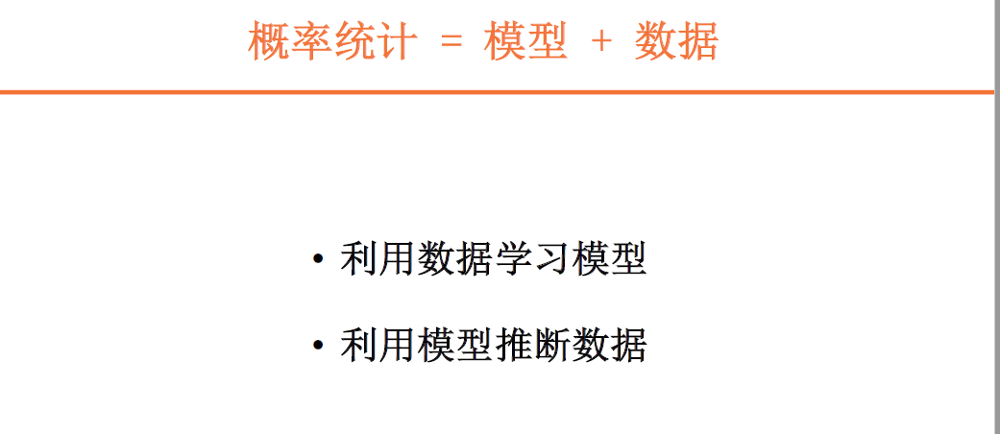
1.利用数据学习模型
如果我们说，线性代数可以看成是数量还有结构的组合的话，那么概率统计就可以看成是模型还有数据的组合。那么模型和数据组合在一块，实际上是双向的处理。
我们机器学习有学习的阶段，我们要利用这个数据去训练这个模型。这个阶段，我们是用数据去学习这个模型。在模型里面，我们就可以去选择。有那么多的模型，像我们刚才说到的，有K-近邻的模型，有回归模型，有决策树，还有支持向量机，这样不同的模型。
我训练的任务就是用数据来学习这些模型，来确定这个模型的参数，最终得到一个确定的模型。这就可以看成什么呢？看成是在给定数据的情况下，我来求解这个参数，它的条件概率。给定的数据，如果有一部分参数的条件概率是最大的，那么就选择这部分参数，作为我这个模型的参数。实际上，训练过程解决的就是这样一个问题。
当然具体来说，包括生成模型，包括判别模型，那么生成模型我们求解的是输入输出的一个联合概率分布，那么判别模型是一个条件概率分布。但不管怎么样，很多情况下，我们关注的目标都是分布，那么利用数据进行训练的过程也就是学习这个分布的过程。
2.利用模型推断数据
接下来呢，在训练结束之后，我们要这个模型要来干什么呢？要进行预测，也就是说，利用这个模型来进行数据的推断。
给定这个模型，我给到一个输入，我输入可能是一个特征，一些特征的组合，形成一个向量。我把这个输入的向量代入到模型当中，就可以求出一个结果，当然也可能是多个结果。我取这个概率最大的结果作为一个输出，这个过程就是反过来利用模型去推断数据的一个过程。
所以我们说，概率统计等于模型和数据的一个组合，这个组合是双向的。在学习阶段，我们利用数据来训练模型，在预测阶段，我们利用模型反过来去推断这个数据。
所以，在概率统计这一块，我们关注的是模型的使用，还有概率的求解。当然两者不是完全区别开的，是相互融合的。在建立模型的时候，我们会利用到一些先验概率分布。在求解目标函数的时候，我们也会涉及求解数学期望这样一些操作。
这里面我们也给出了一个实例，就是回归分析还有机器学习方法的比较。
举例：回归分析与机器学习方法
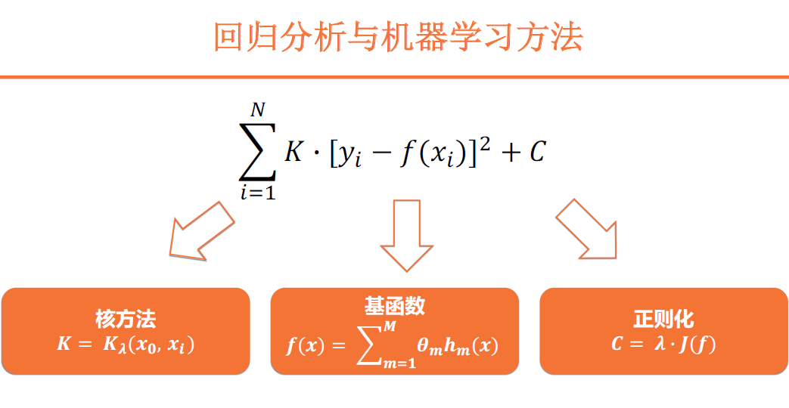
在介绍线性回归的时候，我们提到了最小均方误差的概念。最小均方误差等于什么呢？它等于yi-f(xi)，两者的差值代表了我的预测值和真实值之间的距离。当然这个差值可正可负，如果一个正的误差加上一个负的误差，它们两者的结果可能接近于0，但实际上这两个误差都存在的，并不是说它不存在。所以在这里我们再加一个平方，这样，就能够定量的度量它的误差幅度，而不会受到符号的影响，这就得到了一个标准的均方误差的表达式，也就是y-f(x)，这整个做一个平方。
在此基础上，我们可以对它做一些扩展。比方说对于这个[y-f(x)]^2，我在前面给它乘一个常数K。我们知道，乘一个常数K并不会影响到这个函数的最大值或者最小值。不管乘与不乘，在原来取到最大值的地方依然能取到最大值，原来能取到最小值的地方依然取到最小值，不会影响它极值的分布。那么引入这样一个常数以后，我们还可以引入另外一个常数，就是在后面再加上一个常数C。这个常数和前面那个常数K一样，都不会影响到最小值和最大值的分布。你该在哪取到最小值还是在哪取到最小值。对它做一个改造，我们就可以得到一个新的均方误差表示式。
有了这样一个扩展的模型之后，我们就可以对它做一个改变，或者说对它做一个修正。首先呢，对于这个常数K我们在设定的时候，认为它是一个常数。那么如果我们把它改成一个变量呢？不再把它取成一个常数，而是一个和X相关的变量，这样的改造得到的就是所谓的核方法。
在原始的[y-f(x)]^2的基础上，我给它乘以一个系数，这样的话，相当于给原始的每一项，每一个X，每个不同的X，它的均方误差加上了一个权重，这个就是核方法。但在支持向量机里面我们也提到，核方法的作用是，把低维空间构造成高维空间，把原始的数据从低维空间映射到高维空间之上。这样的话，低维的非线性问题可能就变成了一个高维的线性问题。但是它最基本的操作，或者说最基本的原理是在这里。
我们对原始的均方误差给它做一个修饰，那么最常见的这个高斯和实际上就定义了，它定义的是什么呢？这个参数和我关注的点到这个数据点的距离相关，假如说我关注的点离这个数据点越近，可能它的权重就越大，那么离数据点越远呢，它权重就越小。相当于根据距离施加一个不同的权重，这是核方法它的一个思路。
在核方法当中，我们改变的是这个常数K。同样地，我们也可以对另外一个常数C做一个处理，加入一个和这个模型相关的项，那么这个项不知道会不会有一种似曾相识的感觉。没错，实际上，它就可以看成是这个正则化项。
那么我们添加正则化项，或者是惩罚项的这个方法，也就对应了所谓正则化的方法。在线性回归当中，如果你加到一个二阶的正则化项，二范数的正则化项，我对这个模型的二范数做一个限定，那么得到的就是所谓的岭回归，如果对一范数做一个限定，得到就是所谓的Lasso回归。
当然除了这个模型的范数之外，我们也可以对模型的求导进行一个约束。如果对模型的二阶导做一个约束的话，实际上我们得到的就是一个线性的模型，一阶导得到的就是一个常数的模型。但不管怎么样，它代表的都是正则化的一个思路，我通过添加正则化项去对这个模型做出一个控制。
在这个扩展的模型当中，我们改变了常数K，得到了核方法，改变了常数C得到了正则化项，当然了也可以对原始的f(x)，这个模型做一个处理，把它写成一组函数的组合形式，那么这里得到的就是基函数的形式。
比方说我可以把这个函数X，函数X^2， 它不同的指数项分别作为一个基始，那么把这个基始每一组基，应该说每个基始赋予一个系数，那么得到的就是ax+bx^2，那么做出的这样一个拓展之后，得到的就是一个基函数的这样一个更加复杂的模型。
所以说在这个回归分析，在这个机器学习，我们可以看到方法有很多种，但是归根到底都可以看成是最基本的线性回归方法的一个扩展，我们对线性回归方法做各种各样的改进，可以得到不同的方法。
其实深度学习也是一样，我们也可以从统计的角度来去观察，去解释它。所以我们说，这就是概率统计在机器学习当中的一个作用，因为统计的一部分核心内容就是回归分析。那么在机器学习当中建立模型的时候，我们很大程度会应用到这个模型，那么在具体计算的时候就会涉及到各种各样的概率，比如说条件概率、联合概率，还有信息熵，或者是KL散度、交叉熵，这样一些由概率导出来的信息论里的一些性能指标，这都是我们会用的。
最优化理论在机器学习中的作用
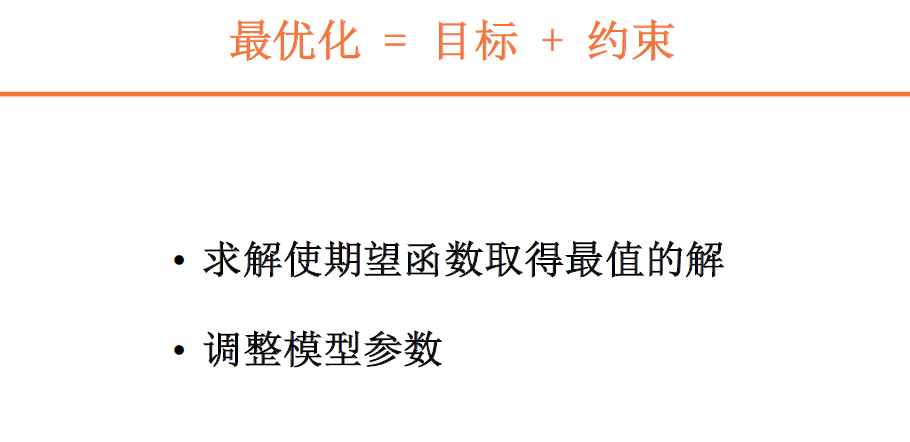
概率统计呢，我们可以把它解释成这个模型和数据的一个组合，那么最优化的话，就可以看成是目标和约束的一个组合。
在这里面，我们最优化的目标是什么呢？是求解，让这个期望函数，或者让目标函数取到最值的解。手段是什么呢？就是通过调整模型的参数来实现。
为什么要调整这个模型的参数？因为很多时候，我们想求解到这个解析解是求不出来的。在很多复杂的问题当中呢，这个解析解是没有办法求出来的。
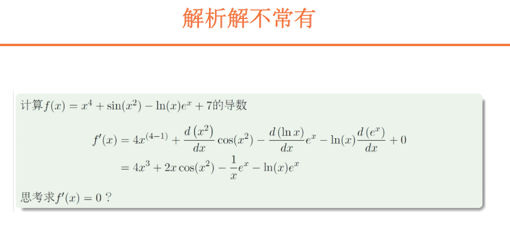
对于线性回归来说，我们可以求解出Beta的一个表达式，那样一个矩阵相乘，求逆，再进行相乘的一个表达式。很多时候，这个解析解我们求不到，求不到怎么办？就只能一点一点去试，一步一步去找，我要的最小值或者最大值，它到底在哪？这个时候就会用到我们最优化的方法，包括梯度下降，包括其他的一些方法。
在使用这些方法的时候，我们要注意调整一些参数。一方面是模型的参数，另外一方面还有所谓的超参数。调整模型参数，一方面，它的作用让我们找到真正的最小值，或者找到真正的最大值。另外一方面，避免在寻找的过程中把最小值，或者最大值，本来你是能找到的，但是这个超参数没有设计好，比如说我的步长、速率没有设计好，把这个点错过，要避免这样一些问题。所以说对于最优化而言，我们可以把它看成是目标，还有参数的一个组合，通过这两者来找到我们想要的合适的点。
这些数学基础需要掌握到什么程度？
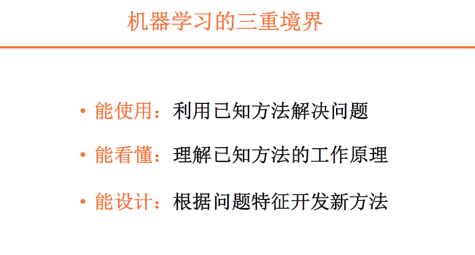
刚才呢，我们结合这些实例，解释了线性代数，概率论，概率学统计，还有最优化，在机器学习当中的一些作用。接下来我们来看一看，需要掌握到什么程度。需要掌握到什么程度呢？实际上，应该说是一个见仁见智的问题。当然理想的情况肯定是掌握得越多越好，最好你能把所有的数学都掌握到，不光是我们提到的这些，甚至更加高级的你都会，这是最好的效果。当然在实际当中，我们不可能，没有那么多精力去专门地钻研到这个数学当中，所以说这种理想的情况也是不存在的。那么具体来说，掌握到什么程度呢？
三重境界之能使用
我在这里列出来了三个阶段。第一个阶段呢，我管它叫做能使用。也就是说，给定一个模型，我能够用它来根据给定的输入来求解输出，也就是利用已知的方法来解决问题。那么这个已知的方法，我可以把它看成一个黑箱子，我不关注这个过程，不关注这个方法是如何解决问题，只要能够解决问题就行。可能已经有了一个算法，那么我只需要对数据做一些处理，把这个数据送入到算法当中，得到一个输出，我能看明白这个输出是怎么回事，这就可以。这是能使用的阶段，我只是做一个算法的使用者，我能把它用清楚就够了。
三重境界之能看懂
如果在能使用的基础上再进一步，那么就是能看懂，我不光用这个已知的方法来解决问题，同时我还能够理解这个方法的工作原理。知其然，还能知其所以然。能使用就是知其然，能看懂就是知其所以然。那么这个方法可能背后有一些数学推导，会涉及到一些概率，最优化，还有线性代数的一些使用。那么这个能看懂，就要求你具备相关的知识，能够把这个推导的过程给它顺下来，知道这个方法具体是怎么来工作。
三重境界之能设计
如果在这个能看懂的基础上，再进一步的话，我们可以把它叫做能设计。我把已知方法理解之后，我还可以根据我的问题，根据我自己的实际问题的特点，来开发一些新的方法。要么呢，可以对已知的方法我来做一些改进，使它更符合我自己的一个待解决问题的方法，或者说我开发一个完全新的方法，就是重新推导，推倒重来，直接设计一个新的方法。那么很显然，这个呢，对于数学功底就有更深层次的一个要求。
所以我们说对于数学的掌握程度包括这样的三个层次，能使用，能看懂，还能设计。那么具体在实际当中，你需要做到哪个程度，那么就要根据自己的实际情况来做出判断。
如何判断应该掌握到哪种深度？
当然在这个判断当中呢，我们要给大家说一个问题，就是深度。如何来进行选择，如果来进行选择呢？我觉得应该有一条准则，这条准则是什么呢？就是数学是手段。
在机器学习当中，我们的目的并不是说研究多深的数学，而是用这个数学去解决我实际的问题。同样的道理，我们在从事相应的工作的时候，学数学也是个手段。
我们并不是说为了学习数学而去学数学，而是为了真正的去解决实际的问题来去学习这些数学。因为我相信可能咱们专栏的读者朋友，大多数都是已经入职，或者说已经工作岗位上，这样的话，我们就不可能像学生这样有大把的自由时间，有大把的精力去放在这个数学学习当中，因为我们要工作，我们能够自由支配的时间是有限的，所以我们要把时间放到合理的地方去，拿这个时间去解决关键的问题。
第二点，我们学习数学也并不是说成为一个数学家，或者成为一个科学家，我们学它的目的也是为了解决我们实际当中的问题，所以说呢，在这种情况之下，你对学习的深度，就要有一个清晰的把控。学到什么程度可以呢？这个我自己的观点是，只要足够解决问题就够了。至于说再深入，如果你有余力可以继续去深入，如果没有余力也可以等到以后我再需要深入的时候，再来进行相应的学习，这是我个人的观点。这个见仁见智，大家可以根据自己的情况来进行参考。
如何尽快、高效率掌握数学知识？
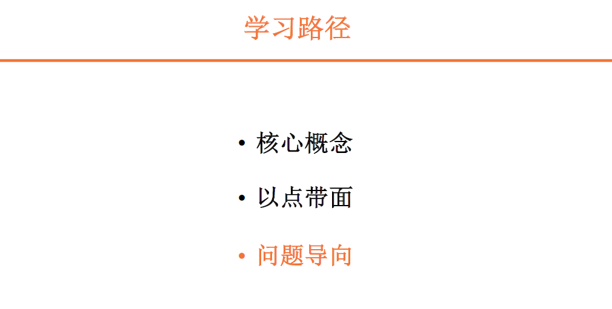
掌握核心概念
在这方面，我给出的建议是，一方面是，我们要握核心概念，在线性代数当中核心概念是什么？就是线性空间，向量矩阵以及对于向量矩阵的度量，包括范数、包括内积这些，这些就是它的核心概念。那么在概率统计当中，频率学派，还有贝叶斯学派，他们两者之间的区别是一个核心概念，同时呢，像期望方差这些指标，还有条件概率，这样的一些概念，条件概率联合概率这样一些概念也是核心概念。那么在最优化当中，这些算法，这个梯度下降法，或者牛顿法，这就是核心概念。
以点带面
在时间有限的情况下，我们一定要把有限的精力集中在重要的知识上。先把这些核心概念搞清楚，再通过这些核心的概念，来以点代面，从这些关键的问题去铺开，慢慢地去接触其他的问题。
问题导向
最后一点呢，我觉得，在学习的时候，我们可以以问题为导向，就是结合着我们实际的需求，结合我们实际的问题，来决定我们去学什么。这个呢，和我们前面所说到的这个掌握到什么程度也是一样，掌握到什么程度也是相通的。因为毕竟我们学习，机器学习，学习机器学习当中的数学都是为了解决问题。如果不能解决问题的话，你学到的这个东西的价值就没有能够解决问题的这个知识的价值大。当然我们也不能说一点价值都没有。在学习的时候，大家可以尝试着以问题为导向。带着问题去探索这些知识，带着问题去学习知识，可能你会发现，这样会得到更高的效率。
推荐书目
推荐书目在我们专栏里面也有相应的推送。但是在这里，我想要跟大家推荐的两本书，都是关于机器学习，或者说都是关于统计学习，一本叫_An Introduction Statistical to Learning_，另一本叫_The Elements of Statistical Learning_。
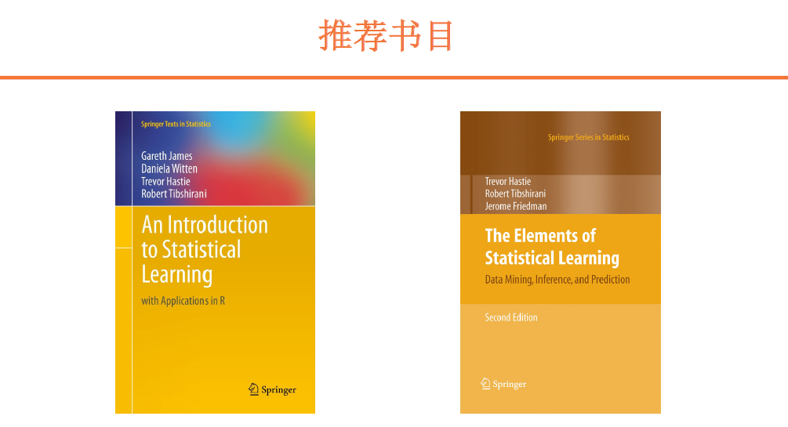
两本书的作者是同一拨人，有两个共同的作者。它们讲述的都是统计学习，或者机器学习的方法。其中前一本可以看成是后一本的简化版。它更通俗、更简单一些，后面这个稍微有些难。为什么推荐这两本呢？因为这两本，它会更深入地挖掘方法背后的一些数学含义。我们能够看到的教科书，它主要的作用是把这个方法讲清楚。来了个方法，比如说线性回归，怎么推导，怎么区算，一大堆公式写出来，那么给出一个推导的结果，或者说决策树，或者其他的算法都一样，可能到这里就结束了，我的任务就完成了。
这两本书，它不光是介绍方法推导，它可能更看中统计学上的意义。我们为什么要这么做，我们设计这个方法在统计学上有什么意义。因为作者都是统计学家，有几十年的积淀，有几十年的研究积淀，所以，相比于其他市面上教科书，我认为他们两个insight可能更多一些，大家看起来，也会有相应的难度。可能并不是说，像我们平时的教科书那么简单。这些书，我们一遍两遍是读不完的，如果真正要从事人工智能、机器学习这方面的工作的话，可能要多读几遍，每读一遍也会有不同的收获。
Q&A
Q：机器学习算法与传统算法学习之间有什么样的关联？ A：我觉得机器学习，或者说统计学习，它可能是一个偏数学的算法。我们偏推导出一个论证，如何用我刚达到最小的误差，或者说达到最小的目标函数，或者最大的目标函数这些。那么传统的算法，计算机的算法，我理解计算机的算法，可能更关注一些复杂度、时间复杂度，或者是运算复杂度，我能在什么样的时间之内去把这个问题解决，这两者是主要的区别。一个偏重于计算机，一个偏重于数学，计算机的算法是机器学习算法的基础，机器学习算法是在纸面上的，如果真的把它实现的话，可能要依赖于计算机的算法。
Q：人工智能可能是处于一个技术的上升期，大家都比较关注，上升期有什么走向，能不能谈一下您的观点？
A：我觉得它的走向就是在各行各业落地。人工智能本身是个方法，或者说它是个手段，它的目的是真正解决实际问题。我如何在实际当中，我在各行各业应用的时候，如何用它来提升我的效率，降低它的成本，这是一个方向。这个未来发展的方向，如果能落地，这个技术，或者这个学科就是一个有生命力的技术，一个真正有生命力的学科。如果在实际的场景下找不到它的业务，那么就会被淘汰。这也是刚才我所说的，大家在学习人工智能时候以问题为导向，看它能真正解决我们行业当中，或者工作当中哪些问题，从这个角度去出发，去学习，这样能带来更高的效率，同时也符合这个技术，或者这个学科的发展方向。
Q：老师有没有开第二期专栏的计划？
A：感谢这位朋友的关注。第二期专栏的计划我们是有的，而且第二期的内容是更加侧重于实例。在第一期的时候，我们的名称叫《人工智能基础课》。大家也看到了，会以理论为主，以介绍算法的原理为主。那么在第二期，我们可能把更多的焦点放在实际应用上。就是当你理解了一个算法之后，我如何去把它用到实际当中，去解决这个实际的问题。这是我们第二期的一个重点内容。
© 2019 - 2023 Liangliang Lee. Powered by gin and hexo-theme-book.